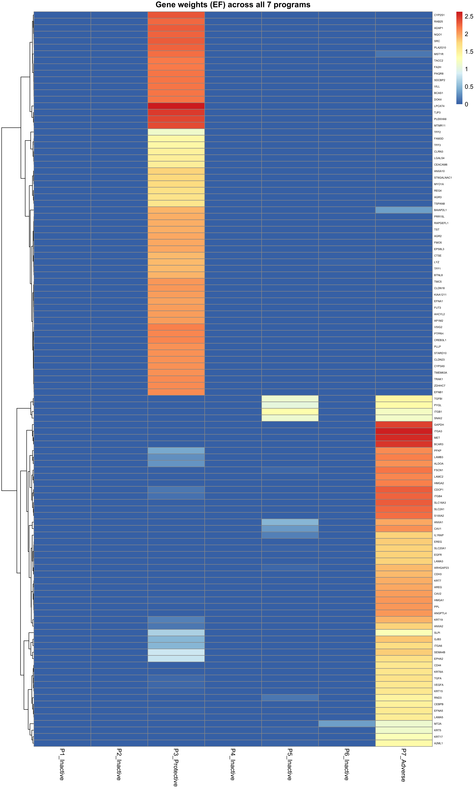

5 August 3, 2026
No change to the recommended model this cycle. This entry adds one new check (do the same 2 programs show up without supervision at all?) and a direct comparison against DeSurv’s published gene programs, then shifts focus toward the manuscript.
5.1 Method updates
Nothing changed in the model or pipeline this cycle; this was a validation and comparison cycle building directly on 7/15.
5.2 Results updates
Do the 2 survival-active programs show up in a fully unsupervised fit, or only because the survival term is pushing them there? Took the unsupervised EBMF fit (the same one already used as the two-step baseline in prior entries, same gene universe, no survival information at all) and correlated its 20 factors against our Programs 3 and 7:
EBMF’s own factor 1 tracks Program 3 (r = −0.72) and factor 2 tracks Program 7 (r = +0.69). Each is clearly the best match for its program among all 20 unsupervised factors. That means this 2-program structure exists in the data independent of the survival term; the survival term identifies it rather than creates it. SBMF is a supervised re-weighting of EBMF’s own factor structure: a variation on EBMF, not a separate model class that happens to also fit survival.
Direct comparison to DeSurv’s published gene programs: Program 7 (adverse) overlaps DeSurv’s basal-like-tumor factor at Jaccard 0.18 (hypergeometric \(p\approx3\times10^{-16}\)); Program 3 (protective) overlaps DeSurv’s classical-tumor factor at Jaccard 0.13 (\(p\approx1\times10^{-7}\)). Different model classes converge on the same tumor biology; that convergence is the point here, not a head-to-head performance claim. A matched, same-protocol comparison against DeSurv is still the pending next step for an actual performance claim.
5.3 Relevance of new findings
Two independent checks now agree that the 2-program structure is real biology rather than a modeling artifact: it reproduces without any survival information at all (EBMF correlation), and it matches an independently published, differently-derived analysis (DeSurv overlap). That’s stronger evidence than either check alone, since neither depends on the joint model’s own objective to succeed.
5.4 Open items to address
- Factor-stability across random seeds is still uncharacterized for the recommended YFB fit.
- Matched, same-protocol head-to-head against DeSurv (same data, same scoring). Builds directly on today’s gene-overlap comparison, but as a performance claim, not just a biology-convergence claim.
- Shift in focus starting now: manuscript writing (introduction and background/literature review). The companion manuscript repository is already scaffolded with an intro draft and a populated reference library; next step is to continue and expand that draft.
5.5 Deep dive
- Full write-up:
SSBMF_Status_Update_08_03_26 - Pathway enrichment methodology and DeSurv overlap detail:
pathway_enrichment_report_07_15_26